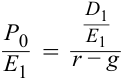
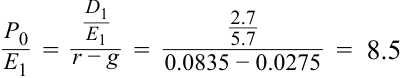

Learning Module 8 Equity Valuation: Concepts and Basic Tools - Part 4: Practice Problems
Volume 5: Equity Investments
Learning Module 8 Equity Valuation: Concepts and Basic Tools
Part 4/4: Practice Problems (PDF Pages 388–398)
Tập 5: Đầu tư Cổ phiếu (Volume 5: Equity Investments)
Học phần 8: Định giá Cổ phiếu: Các Khái niệm và Công cụ Cơ bản (Equity Valuation: Concepts and Basic Tools)
Phần 4/4: Bài tập Thực hành (Practice Problems) (Trang PDF 388–398)
~~PRACTICE PROBLEMS~~
BÀI TẬP THỰC HÀNH (PRACTICE PROBLEMS)
1. An analyst estimates the intrinsic value of a stock to be in the range of €17.85 to €21.45. The current market price of the stock is €24.35. This stock is most likely : A. overvalued. B. undervalued. C. fairly valued.
1. Một chuyên gia phân tích ước tính giá trị nội tại của một cổ phiếu nằm trong khoảng từ €17.85 đến €21.45. Giá thị trường hiện tại của cổ phiếu là €24.35. Cổ phiếu này có khả năng cao nhất đang: - A. bị định giá cao (overvalued). - B. bị định giá thấp (undervalued). - C. được định giá hợp lý (fairly valued).
2. An analyst determines the intrinsic value of an equity security to be equal to $55. If the current price is $47, the equity is most likely : A. undervalued. B. fairly valued. C. overvalued.
2. Một chuyên gia phân tích xác định giá trị nội tại của một chứng khoán vốn bằng $55. Nếu giá hiện tại là $47, chứng khoán vốn này có khả năng cao nhất đang: - A. bị định giá thấp (undervalued). - B. được định giá hợp lý (fairly valued). - C. bị định giá cao (overvalued).
3. In asset-based valuation models, the intrinsic value of a common share of stock is based on the: A. estimated market value of the company’s assets. B. estimated market value of the company’s assets plus liabilities. C. estimated market value of the company’s assets minus liabilities.
3. Trong các mô hình định giá dựa trên tài sản (asset-based valuation models), giá trị nội tại của một cổ phiếu phổ thông được dựa trên: - A. giá trị thị trường ước tính của tài sản công ty. - B. giá trị thị trường ước tính của tài sản cộng với nợ phải trả của công ty. - C. giá trị thị trường ước tính của tài sản trừ đi nợ phải trả của công ty.
4. Which of the following is most likely used in a present value model? A. Enterprise value. B. Price to free cash flow. C. Free cash flow to equity.
4. Đại lượng nào sau đây có khả năng cao nhất được sử dụng trong một mô hình giá trị hiện tại (present value model)? - A. Giá trị doanh nghiệp (Enterprise value). - B. Giá trên dòng tiền tự do (Price to free cash flow). - C. Dòng tiền tự do thuộc về vốn chủ sở hữu (Free cash flow to equity).
5. Book value is least likely to be considered when using: A. a multiplier model. B. an asset-based valuation model. C. a present value model.
5. Giá trị sổ sách (book value) ít có khả năng nhất được xem xét khi sử dụng: - A. một mô hình bội số (multiplier model). - B. một mô hình định giá dựa trên tài sản (asset-based valuation model). - C. một mô hình giá trị hiện tại (present value model).
6. An analyst is attempting to calculate the intrinsic value of a company and has gathered the following company data: EBITDA, total market value, and market value of cash and short-term investments, liabilities, and preferred shares. The analyst is least likely to use: A. a multiplier model. B. a discounted cash flow model. C. an asset-based valuation model.
6. Một chuyên gia phân tích đang cố gắng tính toán giá trị nội tại của một công ty và đã thu thập được các dữ liệu sau đây về công ty: EBITDA, tổng giá trị thị trường, và giá trị thị trường của tiền mặt cùng các khoản đầu tư ngắn hạn, nợ phải trả, và cổ phiếu ưu đãi. Chuyên gia phân tích này ít có khả năng nhất sẽ sử dụng: - A. một mô hình bội số (multiplier model). - B. một mô hình dòng tiền chiết khấu (discounted cash flow model). - C. một mô hình định giá dựa trên tài sản (asset-based valuation model).
7. An analyst who bases the calculation of intrinsic value on dividend-paying capac-
7. Một chuyên gia phân tích đặt cơ sở tính toán giá trị nội tại dựa trên năng lực chi trả cổ tức (dividend-paying capacity)
ity rather than expected dividends will most likely use the:
thay vì cổ tức dự kiến sẽ có khả năng cao nhất sử dụng:
-
A. dividend discount model.
-
B. free cash flow to equity model.
-
C. cash flow from operations model.
-
A. mô hình chiết khấu cổ tức (dividend discount model).
-
B. mô hình dòng tiền tự do thuộc về vốn chủ sở hữu (free cash flow to equity model).
-
C. mô hình dòng tiền từ hoạt động kinh doanh (cash flow from operations model).
8. An investor expects to purchase shares of common stock today and sell them after two years. The investor has estimated dividends for the next two years, D 1 and D 2, and the selling price of the stock two years from now, P 2. According to the dividend discount model, the intrinsic value of the stock today is the present value of:
8. Một nhà đầu tư dự kiến mua cổ phiếu phổ thông ngày hôm nay và bán chúng sau hai năm. Nhà đầu tư đã ước tính cổ tức cho hai năm tới, $D_1$ và $D_2$, cùng giá bán của cổ phiếu sau hai năm nữa kể từ bây giờ, $P_2$. Theo mô hình chiết khấu cổ tức, giá trị nội tại của cổ phiếu ngày hôm nay là giá trị hiện tại của:
-
A. next year’s dividend, D 1.
-
B. future expected dividends, D 1 and D 2.
-
C. future expected dividends and price— D 1, D 2 and P 2.
-
A. cổ tức năm tới, $D_1$.
-
B. các khoản cổ tức dự kiến trong tương lai, $D_1$ và $D_2$.
-
C. các khoản cổ tức và mức giá dự kiến trong tương lai—$D_1$, $D_2$ và $P_2$.
9. In the free cash flow to equity (FCFE) model, the intrinsic value of a share of stock is calculated as:
9. Trong mô hình dòng tiền tự do thuộc về vốn chủ sở hữu (FCFE), giá trị nội tại của một cổ phiếu được tính bằng:
-
A. the present value of future expected FCFE.
-
B. the present value of future expected FCFE plus net borrowing.
-
C. the present value of future expected FCFE minus fixed capital investment.
-
A. giá trị hiện tại của các khoản FCFE dự kiến trong tương lai.
-
B. giá trị hiện tại của các khoản FCFE dự kiến trong tương lai cộng với vay ròng (net borrowing).
-
C. giá trị hiện tại của các khoản FCFE dự kiến trong tương lai trừ đi đầu tư tài sản cố định (fixed capital investment).
10. With respect to present value models, which of the following statements is most accurate ?
10.Liên quan đến các mô hình giá trị hiện tại, phát biểu nào sau đây là chính xác nhất?
-
A. Present value models can be used only if a stock pays a dividend.
-
B. Present value models can be used only if a stock pays a dividend or is expected to pay a dividend.
-
C. Present value models can be used for stocks that currently pay a dividend, are expected to pay a dividend, or are not expected to pay a dividend.
-
A. Các mô hình giá trị hiện tại chỉ có thể được sử dụng nếu cổ phiếu có trả cổ tức.
-
B. Các mô hình giá trị hiện tại chỉ có thể được sử dụng nếu cổ phiếu có trả cổ tức hoặc dự kiến sẽ trả cổ tức.
-
C. Các mô hình giá trị hiện tại có thể được sử dụng cho các cổ phiếu hiện đang trả cổ tức, dự kiến sẽ trả cổ tức, hoặc không dự kiến sẽ trả cổ tức.
11. A Canadian life insurance company has an issue of 4.80 percent, $25 par value, perpetual, non-convertible, non-callable preferred shares outstanding. The required rate of return on similar issues is 4.49 percent. The intrinsic value of a preferred share is closest to :
11.Một công ty bảo hiểm nhân thọ của Canada đang có một đợt cổ phiếu ưu đãi vĩnh cửu, không có quyền chuyển đổi, không có quyền mua lại đang lưu hành với mệnh giá $25 và tỷ lệ cổ tức 4.80 phần trăm. Tỷ suất sinh lợi yêu cầu đối với các đợt phát hành tương tự là 4.49 phần trăm. Giá trị nội tại của một cổ phiếu ưu đãi gần nhất với mức:
-
A. $25.00.
-
B. $26.75.
-
C. $28.50.
-
A. $25.00.
-
B. $26.75.
-
C. $28.50.
12. Two analysts estimating the value of a non-convertible, non-callable, perpetual preferred stock with a constant dividend arrive at different estimated values. The most likely reason for the difference is that the analysts used different:
12.Hai chuyên gia phân tích khi ước tính giá trị của một cổ phiếu ưu đãi vĩnh cửu, không có quyền chuyển đổi, không có quyền mua lại với mức cổ tức không đổi đã đi đến các giá trị ước tính khác nhau. Lý do có khả năng cao nhất cho sự khác biệt này là hai chuyên gia phân tích đã sử dụng khác nhau về:
-
A. time horizons.
-
B. required rates of return.
-
C. estimated dividend growth rates.
-
A. khung thời gian đầu tư (time horizons).
-
B. tỷ suất sinh lợi yêu cầu (required rates of return).
-
C. tốc độ tăng trưởng cổ tức ước tính (estimated dividend growth rates).
13. The Beasley Corporation has just paid a dividend of $1.75 per share. If the required rate of return is 12.3 percent per year and dividends are expected to grow indefinitely at a constant rate of 9.2 percent per year, the intrinsic value of Beasley Corporation stock is closest to:
13.Beasley Corporation vừa mới trả mức cổ tức $1.75 trên mỗi cổ phiếu. Nếu tỷ suất sinh lợi yêu cầu là 12.3 phần trăm mỗi năm và cổ tức dự kiến sẽ tăng trưởng vô thời hạn với tốc độ không đổi là 9.2 phần trăm mỗi năm, giá trị nội tại của cổ phiếu Beasley Corporation gần nhất với mức:
-
A. $15.54.
-
B. $56.45.
-
C. $61.65.
-
A. $15.54.
-
B. $56.45.
-
C. $61.65.
14. An investor is considering the purchase of a common stock with a $2.00 annual dividend. The dividend is expected to grow at a rate of 4 percent annually. If the investor’s required rate of return is 7 percent, the intrinsic value of the stock is closest to:
14.Một nhà đầu tư đang cân nhắc mua một cổ phiếu phổ thông có mức cổ tức hàng năm là $2.00. Cổ tức dự kiến sẽ tăng trưởng ở tốc độ 4 phần trăm hàng năm. Nếu tỷ suất sinh lợi yêu cầu của nhà đầu tư là 7 phần trăm, giá trị nội tại của cổ phiếu gần nhất với mức:
-
A. $50.00.
-
B. $66.67.
-
C. $69.33.
-
A. $50.00.
-
B. $66.67.
-
C. $69.33.
15. The Gordon growth model can be used to value dividend-paying companies that are:
15.Mô hình tăng trưởng Gordon có thể được sử dụng để định giá các công ty có trả cổ tức đang:
-
A. expected to grow very fast.
-
B. in a mature phase of growth.
-
C. very sensitive to the business cycle.
-
A. dự kiến tăng trưởng rất nhanh.
-
B. ở trong giai đoạn tăng trưởng trưởng thành/bão hòa (mature phase of growth).
-
C. rất nhạy cảm với chu kỳ kinh doanh (business cycle).
16. Which of the following is most likely considered a weakness of present value models?
16.Điều nào sau đây có khả năng cao nhất được coi là một điểm yếu của các mô hình giá trị hiện tại?
-
A. Present value models cannot be used for companies that do not pay dividends.
-
B. Small changes in model assumptions and inputs can result in large changes in the computed intrinsic value of the security.
-
C. The value of the security depends on the investor’s holding period; thus, comparing valuations of different companies for different investors is difficult.
-
A. Các mô hình giá trị hiện tại không thể sử dụng cho những công ty không trả cổ tức.
-
B. Những thay đổi nhỏ trong giả định và dữ liệu đầu vào của mô hình có thể dẫn đến những thay đổi lớn trong giá trị nội tại tính toán được của chứng khoán.
-
C. Giá trị của chứng khoán phụ thuộc vào thời kỳ nắm giữ của nhà đầu tư; do đó, việc so sánh mức định giá của các công ty khác nhau đối với những nhà đầu tư khác nhau là rất khó khăn.
17. An analyst gathers or estimates the following information about a stock:
17.Một chuyên gia phân tích thu thập hoặc ước tính thông tin sau đây về một cổ phiếu:
| Current price per share | €22.56 |
|---|---|
| Current annual dividend per share | €1.60 |
| Annual dividend growth rate for Years 1–4 | 9.00% |
| Annual dividend growth rate for Years 5+ | 4.00% |
| Required rate of return | 12% |
| Khoản mục | Giá trị |
|---|---|
| Giá hiện tại mỗi cổ phiếu | €22.56 |
| Cổ tức hàng năm hiện tại mỗi cổ phiếu | €1.60 |
| Tốc độ tăng trưởng cổ tức hàng năm cho các Năm 1–4 | 9.00% |
| Tốc độ tăng trưởng cổ tức hàng năm cho các Năm 5+ | 4.00% |
| Tỷ suất sinh lợi yêu cầu | 12% |
Based on a dividend discount model, the stock is most likely :
Dựa trên mô hình chiết khấu cổ tức, cổ phiếu này có khả năng cao nhất đang:
-
A. undervalued.
-
B. fairly valued.
-
C. overvalued.
-
A. bị định giá thấp (undervalued).
-
B. được định giá hợp lý (fairly valued).
-
C. bị định giá cao (overvalued).
18. An analyst is attempting to value shares of the Dominion Company. The company has just paid a dividend of $0.58 per share. Dividends are expected to grow by 20 percent next year and 15 percent the year after that. From the third year onward, dividends are expected to grow at 5.6 percent per year indefinitely. If the required rate of return is 8.3 percent, the intrinsic value of the stock is closest to:
18.Một chuyên gia phân tích đang cố gắng định giá cổ phiếu của Công ty Dominion. Công ty vừa mới trả mức cổ tức $0.58 trên mỗi cổ phiếu. Cổ tức dự kiến sẽ tăng trưởng 20 phần trăm vào năm tới và 15 phần trăm vào năm sau đó. Từ năm thứ ba trở đi, cổ tức dự kiến sẽ tăng trưởng ở mức 5.6 phần trăm mỗi năm vô thời hạn. Nếu tỷ suất sinh lợi yêu cầu là 8.3 phần trăm, giá trị nội tại của cổ phiếu gần nhất với mức:
-
A. $26.00.
-
B. $27.00.
-
C. $28.00.
-
A. $26.00.
-
B. $27.00.
-
C. $28.00.
19. Hideki Corporation has just paid a dividend of ¥450 per share. Annual dividends are expected to grow at the rate of 4 percent per year over the next four years. At the end of four years, shares of Hideki Corporation are expected to sell for ¥9000. If the required rate of return is 12 percent, the intrinsic value of a share of Hideki Corporation is closest to:
19.Hideki Corporation vừa mới trả mức cổ tức ¥450 trên mỗi cổ phiếu. Cổ tức hàng năm dự kiến sẽ tăng trưởng ở tốc độ 4 phần trăm mỗi năm trong suốt bốn năm tới. Vào cuối bốn năm đó, cổ phiếu của Hideki Corporation dự kiến sẽ bán được ở mức giá ¥9,000. Nếu tỷ suất sinh lợi yêu cầu là 12 phần trăm, giá trị nội tại của một cổ phiếu Hideki Corporation gần nhất với mức:
-
A. ¥5,850.
-
B. ¥7,220.
-
C. ¥7,670.
-
A. ¥5,850.
-
B. ¥7,220.
-
C. ¥7,670.
20. The best model to use when valuing a young dividend-paying company that is just entering the growth phase is most likely the:
20.Mô hình tốt nhất để sử dụng khi định giá một công ty trẻ có trả cổ tức và vừa mới bước vào giai đoạn tăng trưởng có khả năng cao nhất là:
-
A. Gordon growth model.
-
B. two-stage dividend discount model.
-
C. three-stage dividend discount model.
-
A. mô hình tăng trưởng Gordon (Gordon growth model).
-
B. mô hình chiết khấu cổ tức hai giai đoạn (two-stage dividend discount model).
-
C. mô hình chiết khấu cổ tức ba giai đoạn (three-stage dividend discount model).
21. An equity analyst has been asked to estimate the intrinsic value of the common stock of Omega Corporation, a leading manufacturer of automobile seats. Omega is in a mature industry, and both its earnings and dividends are expected to grow at a rate of 3 percent annually. Which of the following is most likely to be the best model for determining the intrinsic value of an Omega share?
21.Một chuyên gia phân tích cổ phiếu được yêu cầu ước tính giá trị nội tại của cổ phiếu phổ thông thuộc Omega Corporation, một nhà sản xuất ghế ô tô hàng đầu. Omega đang ở trong một ngành đã trưởng thành/bão hòa (mature industry), và cả thu nhập lẫn cổ tức của công ty đều dự kiến sẽ tăng trưởng ở tốc độ 3 phần trăm hàng năm. Mô hình nào sau đây có khả năng cao nhất là mô hình tốt nhất để xác định giá trị nội tại của một cổ phiếu Omega?
-
A. Gordon growth model.
-
B. Free cash flow to equity model.
-
C. Multistage dividend discount model.
-
A. Mô hình tăng trưởng Gordon (Gordon growth model).
-
B. Mô hình dòng tiền tự do thuộc về vốn chủ sở hữu (Free cash flow to equity model).
-
C. Mô hình chiết khấu cổ tức đa giai đoạn (Multistage dividend discount model).
22. A price earnings ratio that is derived from the Gordon growth model is inversely related to the:
22.Tỷ số giá trên thu nhập (P/E) được suy ra từ mô hình tăng trưởng Gordon có mối quan hệ nghịch biến với:
-
A. growth rate.
-
B. dividend payout ratio.
-
C. required rate of return.
-
A. tốc độ tăng trưởng (growth rate).
-
B. tỷ lệ chi trả cổ tức (dividend payout ratio).
-
C. tỷ suất sinh lợi yêu cầu (required rate of return).
23. The primary difference between P/E multiples based on comparables and P/E multiples based on fundamentals is that fundamentals-based P/Es take into account:
23.Sự khác biệt chính yếu giữa các bội số P/E dựa trên phương pháp so sánh (comparables) và các bội số P/E dựa trên các yếu tố cơ bản (fundamentals) là hệ số P/E dựa trên các yếu tố cơ bản có tính đến:
-
A. future expectations.
-
B. the law of one price.
-
A. các kỳ vọng trong tương lai (future expectations).
-
B. quy luật một giá (the law of one price).
- C. historical information.
- C. thông tin lịch sử (historical information).
24. An analyst makes the following statement: “Use of P/E and other multiples for analysis is not effective because the multiples are based on historical data and because not all companies have positive accounting earnings.” The analyst’s statement is most likely :
24.Một chuyên gia phân tích đưa ra phát biểu sau: “Việc sử dụng P/E và các bội số khác để phân tích là không hiệu quả bởi vì các bội số được dựa trên dữ liệu lịch sử và bởi vì không phải tất cả các công ty đều có thu nhập kế toán dương.” Phát biểu của chuyên gia phân tích này có khả năng cao nhất là:
-
A. inaccurate with respect to both historical data and earnings.
-
B. accurate with respect to historical data and inaccurate with respect to earnings.
-
C. inaccurate with respect to historical data and accurate with respect to earnings.
-
A. không chính xác đối với cả dữ liệu lịch sử lẫn thu nhập.
-
B. chính xác đối với dữ liệu lịch sử và không chính xác đối với thu nhập.
-
C. không chính xác đối với dữ liệu lịch sử và chính xác đối với thu nhập.
25. An analyst has gathered the following information for the Oudin Corporation: Expected earnings per share = €5.70 Expected dividends per share = €2.70 Dividends are expected to grow at 2.75 percent per year indefinitely The required rate of return is 8.35 percent
Based on the information provided, the price/earnings multiple for Oudin is closest to:
25.Một chuyên gia phân tích đã thu thập được các thông tin sau đây cho Oudin Corporation: - Thu nhập dự kiến trên mỗi cổ phiếu (Expected EPS) = €5.70 - Cổ tức dự kiến trên mỗi cổ phiếu (Expected DPS) = €2.70 - Cổ tức dự kiến sẽ tăng trưởng ở mức 2.75 phần trăm mỗi năm vô thời hạn - Tỷ suất sinh lợi yêu cầu là 8.35 phần trăm
-
A. 5.7.
-
B. 8.5.
Dựa trên thông tin được cung cấp, bội số giá/thu nhập (P/E) của Oudin gần nhất với mức:
C. 9.4.
-
A. 5.7.
-
B. 8.5.
-
C. 9.4.
26. An analyst has prepared a table of the average trailing twelve-month price-to-earning (P/E), price-to-cash flow (P/CF), and price-to-sales (P/S) for the Tanaka Corporation for the years 2014 to 2017.
26.Một chuyên gia phân tích đã lập một bảng gồm các hệ số giá trên thu nhập (P/E), giá trên dòng tiền (P/CF), và giá trên doanh thu (P/S) 12 tháng gần nhất (trailing twelve-month) trung bình của Tanaka Corporation cho các năm từ 2014 đến 2017.
| Year | P/E | P/CF | P/S |
|---|---|---|---|
| 2014 | 4.9 | 5.4 | 1.2 |
| 2015 | 6.1 | 8.6 | 1.5 |
| 2016 | 8.3 | 7.3 | 1.9 |
| 2017 | 9.2 | 7.9 | 2.3 |
| Năm (Year) | P/E | P/CF | P/S |
|---|---|---|---|
| 2014 | 4.9 | 5.4 | 1.2 |
| 2015 | 6.1 | 8.6 | 1.5 |
| 2016 | 8.3 | 7.3 | 1.9 |
| 2017 | 9.2 | 7.9 | 2.3 |
As of the date of the valuation in 2018, the trailing twelve-month P/E, P/CF, and P/S are, respectively, 9.2, 8.0, and 2.5. Based on the information provided, the analyst may reasonably conclude that Tanaka shares are most likely :
Tính đến ngày định giá vào năm 2018, các hệ số P/E, P/CF và P/S 12 tháng gần nhất lần lượt là 9.2, 8.0 và 2.5. Dựa trên thông tin được cung cấp, chuyên gia phân tích có thể kết luận một cách hợp lý rằng cổ phiếu của Tanaka có khả năng cao nhất đang:
-
A. overvalued.
-
B. undervalued.
-
C. fairly valued.
-
A. bị định giá cao (overvalued).
-
B. bị định giá thấp (undervalued).
-
C. được định giá hợp lý (fairly valued).
27. An analyst gathers the following information about two companies:
27.Một chuyên gia phân tích thu thập thông tin sau đây về hai công ty:
| Alpha Corp. | Delta Co. | |
|---|---|---|
| Current price per share | $57.32|$18.93 |
| Alpha Corp. | Delta Co. | |
|---|---|---|
| Giá hiện tại mỗi cổ phiếu | $57.32|$18.93 |
|Last year’s EPS|$3.82|$1.35| |---|---|---| |Currentyear’s estimated EPS|$4.75|$1.40|
| Alpha Corp. | Delta Co. | |
|---|---|---|
| EPS năm ngoái (Last year’s EPS) | $3.82|$1.35 | |
| EPS ước tính của năm hiện tại (Current year’s estimated EPS) | $4.75|$1.40 |
Which of the following statements is most accurate ?
Phát biểu nào sau đây là chính xác nhất?
-
A. Delta has the higher trailing P/E multiple and lower current estimated P/E multiple.
-
B. Alpha has the higher trailing P/E multiple and lower current estimated P/E multiple.
-
C. Alpha has the higher trailing P/E multiple and higher current estimated P/E multiple.
-
A. Delta có bội số P/E quá khứ (trailing P/E) cao hơn và bội số P/E ước tính hiện tại (current estimated P/E) thấp hơn.
-
B. Alpha có bội số P/E quá khứ cao hơn và bội số P/E ước tính hiện tại thấp hơn.
-
C. Alpha có bội số P/E quá khứ cao hơn và bội số P/E ước tính hiện tại cao hơn.
28. An analyst gathers the following information about similar companies in the banking sector:
28.Một chuyên gia phân tích thu thập thông tin sau đây về các công ty tương đồng trong ngành ngân hàng:
| First Bank | Prime Bank | Pioneer Trust | |
|---|---|---|---|
| P/B | 1.10 | 0.60 | 0.60 |
| P/E | 8.40 | 11.10 | 8.30 |
| First Bank | Prime Bank | Pioneer Trust | |
|---|---|---|---|
| P/B | 1.10 | 0.60 | 0.60 |
| P/E | 8.40 | 11.10 | 8.30 |
Which of the companies is most likely to be undervalued?
Công ty nào có khả năng cao nhất đang bị định giá thấp (undervalued)?
-
A. First Bank.
-
B. Prime Bank.
-
C. Pioneer Trust.
-
A. First Bank.
-
B. Prime Bank.
-
C. Pioneer Trust.
29. The market value of equity for a company can be calculated as enterprise value:
-
A. minus market value of debt, preferred stock, and short-term investments.
-
B. plus market value of debt and preferred stock minus short-term investments.
-
C. minus market value of debt and preferred stock plus short-term investments.
29.Giá trị thị trường của vốn chủ sở hữu đối với một công ty có thể được tính bằng giá trị doanh nghiệp (enterprise value):
30. Which of the following statements regarding the calculation of the enterprise value multiple is most likely correct?
-
A. trừ đi giá trị thị trường của nợ vay, cổ phiếu ưu đãi, và các khoản đầu tư ngắn hạn.
-
B. cộng với giá trị thị trường của nợ vay và cổ phiếu ưu đãi trừ đi các khoản đầu tư ngắn hạn.
-
C. trừ đi giá trị thị trường của nợ vay và cổ phiếu ưu đãi cộng với các khoản đầu tư ngắn hạn.
-
A. Operating income may be used instead of EBITDA.
-
B. EBITDA may not be used if company earnings are negative.
-
C. Book value of debt may be used instead of market value of debt.
30.Phát biểu nào sau đây liên quan đến việc tính toán bội số giá trị doanh nghiệp (enterprise value multiple) là có khả năng đúng nhất?
31. An analyst has determined that the appropriate EV/EBITDA for Rainbow Company is 10.2. The analyst has also collected the following forecasted information for Rainbow Company:
EBITDA = $22,000,000 Market value of debt = $56,000,000
-
A. Thu nhập hoạt động (operating income) có thể được sử dụng thay cho EBITDA.
-
B. EBITDA không thể được sử dụng nếu thu nhập của công ty bị âm.
-
C. Giá trị sổ sách của nợ vay có thể được sử dụng thay cho giá trị thị trường của nợ vay.
Cash = $1,500,000
31.Một chuyên gia phân tích đã xác định rằng hệ số EV/EBITDA phù hợp cho Công ty Rainbow là 10.2. Chuyên gia phân tích cũng đã thu thập các thông tin dự báo sau đây cho Công ty Rainbow: - $\text{EBITDA} = \$22,000,000$ - $\text{Giá trị thị trường của nợ vay} = \$56,000,000$ - $\text{Tiền mặt} = \$1,500,000$
The value of equity for Rainbow Company is closest to:
Giá trị vốn chủ sở hữu của Công ty Rainbow gần nhất với mức:
-
A. $169 million. **B.** $224 million. C. $281 million.
-
32. Enterprise value is most often determined as market capitalization of common equity and preferred stock minus the value of cash equivalents plus the: A. book value of debt. B. market value of debt. C. market value of long-term debt.
-
33. A disadvantage of the EV method for valuing equity is that the following information may be difficult to obtain: A. Operating income. B. Market value of debt. C. Market value of equity.
-
34. Asset-based valuation models are best suited to companies where the capital structure does not have a high proportion of: A. debt. B. intangible assets. C. current assets and liabilities.
-
35. Which of the following is most likely a reason for using asset-based valuation? A. The analyst is valuing a privately held company. B. The company has a relatively high level of intangible assets. C. The market values of assets and liabilities are different from the balance sheet values.
-
36. Which type of equity valuation model is most likely to be preferable when one is comparing similar companies? A. A multiplier model. B. A present value model. C. An asset-based valuation model.
- A. $169 triệu.
- B. $224 triệu.
- C. $281 triệu.
32. Giá trị doanh nghiệp (Enterprise value) thường được xác định nhất bằng giá trị vốn hóa thị trường của vốn chủ sở hữu phổ thông và cổ phiếu ưu đãi trừ đi giá trị của các khoản tương đương tiền cộng với: - A. giá trị sổ sách của nợ vay (book value of debt). - B. giá trị thị trường của nợ vay (market value of debt). - C. giá trị thị trường của nợ dài hạn (market value of long-term debt).
33. Một nhược điểm của phương pháp EV trong việc định giá vốn chủ sở hữu là thông tin nào sau đây có thể khó thu thập được: - A. Thu nhập hoạt động (Operating income). - B. Giá trị thị trường của nợ vay (Market value of debt). - C. Giá trị thị trường của vốn chủ sở hữu (Market value of equity).
34. Các mô hình định giá dựa trên tài sản phù hợp nhất với những công ty mà cấu trúc tài sản/nguồn vốn không có tỷ trọng cao về: - A. nợ vay (debt). - B. tài sản vô hình (intangible assets). - C. tài sản ngắn hạn và nợ ngắn hạn (current assets and liabilities).
35. Điều nào sau đây có khả năng cao nhất là một lý do để sử dụng định giá dựa trên tài sản? - A. Chuyên gia phân tích đang định giá một công ty tư nhân (privately held company). - B. Công ty có mức độ tài sản vô hình tương đối cao. - C. Giá trị thị trường của tài sản và nợ phải trả khác với giá trị trên bảng cân đối kế toán.
36. Loại mô hình định giá cổ phiếu nào có khả năng cao nhất được ưu tiên hơn khi một người đang so sánh các công ty tương đồng? - A. Mô hình bội số (A multiplier model). - B. Mô hình giá trị hiện tại (A present value model). - C. Mô hình định giá dựa trên tài sản (An asset-based valuation model).
~~SOLUTIONS~~
LỜI GIẢI (SOLUTIONS)
-
A is correct. The current market price of the stock exceeds the upper bound of the analyst’s estimate of the intrinsic value of the stock.
-
A is correct. The market price is less than the estimated intrinsic, or fundamental, value.
-
C is correct. Asset-based valuation models calculate the intrinsic value of equity by subtracting liabilities from the market value of assets.
-
C is correct. FCFE can be used in a form of present value, or discounted cash flow, model. Both EV and price to free cash flow are forms of multiplier models.
-
C is correct. Multiplier valuation models (in the form of P/B) and asset-based valuation models (in the form of adjustments to book value) use book value, whereas present value models typically discount future expected cash flows.
-
B is correct. To use a discounted cash flow model, the analyst will require FCFE or dividend data. In addition, the analyst will need data to calculate an appropriate discount rate.
-
B is correct. The FCFE model assumes that dividend-paying capacity is reflected in FCFE.
-
C is correct. According to the dividend discount model, the intrinsic value of a stock today is the present value of all future dividends. In this case, the intrinsic value is the present value of D 1, D 2, and P 2. Note that P 2 is the present value at Period 2 of all future dividends from Period 3 to infinity.
-
A is correct. In the FCFE model, the intrinsic value of stock is calculated by discounting expected future FCFE to present value. No further adjustments are required.
-
C is correct. Dividend discount models can be used for a stock that pays a current dividend or a stock that is expected to pay a dividend. FCFE can be used for both of those stocks and for stocks that do not, or are not expected to, pay dividends in the near future. Both of these models are forms of present value models.
-
B is correct. The expected annual dividend is 4.80% × $25 = $1.20. The value of a preferred share is $1.20/0.0449 = $26.73.
-
B is correct. The required rate of return, r , can vary widely depending on the inputs and is not unique. A preferred stock with a constant dividend would not have a growth rate to estimate, and the investor’s time horizon would have no effect on the calculation of intrinsic value.
-
C is correct. P 0 = D 1/( r – g ) = 1.75(1.092)/(0.123 – 0.092) = $61.65.
-
C is correct. According to the Gordon growth model, V 0 = D 1/( r – g ). In this case, D 1 = $2.00 × 1.04 = $2.08, so V 0 = $2.08/(0.07 – 0.04) = $69.3333 = $69.33.
-
B is correct. The Gordon growth model (also known as the constant growth model) can be used to value dividend-paying companies in a mature phase of growth. A stable dividend growth rate is often a plausible assumption for such companies.
-
A là đáp án đúng. Giá thị trường hiện tại của cổ phiếu (€24.35) vượt quá cận trên trong khoảng ước tính giá trị nội tại của cổ phiếu (€21.45) do chuyên gia phân tích đưa ra.
-
A là đáp án đúng. Giá thị trường ($47) thấp hơn giá trị nội tại hay giá trị cơ bản ước tính ($55).
-
C là đáp án đúng. Các mô hình định giá dựa trên tài sản tính toán giá trị nội tại của vốn chủ sở hữu bằng cách lấy giá trị thị trường của tài sản trừ đi các khoản nợ phải trả.
-
C là đáp án đúng. FCFE có thể được sử dụng trong một dạng mô hình giá trị hiện tại, hay mô hình dòng tiền chiết khấu. Cả EV lẫn tỷ số giá trên dòng tiền tự do (P/FCF) đều là các dạng của mô hình bội số.
-
C là đáp án đúng. Các mô hình định giá theo bội số (dưới dạng P/B) và các mô hình định giá dựa trên tài sản (dưới dạng các điều chỉnh đối với giá trị sổ sách) có sử dụng giá trị sổ sách, trong khi các mô hình giá trị hiện tại thường chiết khấu các dòng tiền dự kiến trong tương lai.
-
B là đáp án đúng. Để sử dụng một mô hình dòng tiền chiết khấu, chuyên gia phân tích sẽ cần dữ liệu về FCFE hoặc cổ tức. Ngoài ra, chuyên gia phân tích sẽ cần dữ liệu để tính toán một mức lãi suất chiết khấu phù hợp.
-
B là đáp án đúng. Mô hình FCFE giả định rằng năng lực chi trả cổ tức được phản ánh trong FCFE.
-
C là đáp án đúng. Theo mô hình chiết khấu cổ tức, giá trị nội tại của một cổ phiếu ngày hôm nay là giá trị hiện tại của tất cả các khoản cổ tức trong tương lai. Trong trường hợp này, giá trị nội tại là giá trị hiện tại của $D_1$, $D_2$, và $P_2$. Lưu ý rằng $P_2$ là giá trị hiện tại tại Kỳ 2 của tất cả các khoản cổ tức tương lai tính từ Kỳ 3 đến vô cùng.
-
A là đáp án đúng. Trong mô hình FCFE, giá trị nội tại của cổ phiếu được tính bằng cách chiết khấu các khoản FCFE dự kiến trong tương lai về giá trị hiện tại. Không cần thực hiện thêm bất kỳ điều chỉnh nào khác.
-
C là đáp án đúng. Các mô hình chiết khấu cổ tức có thể được sử dụng cho một cổ phiếu hiện đang trả cổ tức hoặc một cổ phiếu dự kiến sẽ trả cổ tức. Mô hình FCFE có thể được sử dụng cho cả hai loại cổ phiếu đó và cho cả những cổ phiếu không trả, hoặc không dự kiến sẽ trả cổ tức trong tương lai gần. Cả hai mô hình này đều là các dạng của mô hình giá trị hiện tại.
-
B là đáp án đúng. Cổ tức hàng năm dự kiến là $4.80\% \times \$25 = \$1.20$. Giá trị của một cổ phiếu ưu đãi là $\$1.20 / 0.0449 = \$26.73$ (gần nhất với $26.75).
-
B là đáp án đúng. Tỷ suất sinh lợi yêu cầu, $r$, có thể biến thiên rộng tùy thuộc vào các dữ liệu đầu vào và không phải là duy nhất. Một cổ phiếu ưu đãi với mức cổ tức không đổi sẽ không có tốc độ tăng trưởng cần phải ước tính, và khung thời gian đầu tư của nhà đầu tư không có ảnh hưởng nào đến việc tính toán giá trị nội tại.
-
C là đáp án đúng. $P_0 = D_1 / (r - g) = 1.75(1.092) / (0.123 - 0.092) = \$61.65$.
-
C là đáp án đúng. Theo mô hình tăng trưởng Gordon, $V_0 = D_1 / (r - g)$. Trong trường hợp này, $D_1 = \$2.00 \times 1.04 = \$2.08$, do đó $V_0 = \$2.08 / (0.07 - 0.04) = \$69.3333 = \$69.33$.
-
B là đáp án đúng. Mô hình tăng trưởng Gordon (còn được gọi là mô hình tăng trưởng không đổi) có thể được sử dụng để định giá các công ty có trả cổ tức đang ở trong giai đoạn tăng trưởng trưởng thành/bão hòa (mature phase of growth). Tốc độ tăng trưởng cổ tức ổn định thường là một giả định hợp lý cho những công ty như vậy.
-
B is correct. Very small changes in inputs, such as required rate of return or dividend growth rate, can result in large changes to the valuation model output. Some present value models, such as FCFE models, can be used to value companies without dividends. Also, the intrinsic value of a security is independent of the investor’s holding period.
-
A is correct. The current price of €22.56 is less than the intrinsic value ( V 0) of €24.64; therefore, the stock appears to be currently undervalued. According to the two-stage dividend discount model:
n D_ 0 ( 1 + gS ) t + Vn_ Dn_ +1 V 0 = ∑( 1 + r)t( 1 + r)n_and_Vn= r − gL t =1
Dn +1 = D 0(1 + gS )n (1 + gL )
-
B là đáp án đúng. Những thay đổi rất nhỏ trong các dữ liệu đầu vào, chẳng hạn như tỷ suất sinh lợi yêu cầu hoặc tốc độ tăng trưởng cổ tức, có thể dẫn đến những thay đổi lớn trong kết quả đầu ra của mô hình định giá. Một số mô hình giá trị hiện tại, chẳng hạn như các mô hình FCFE, vẫn có thể được sử dụng để định giá các công ty không trả cổ tức. Ngoài ra, giá trị nội tại của một chứng khoán độc lập với thời kỳ nắm giữ của nhà đầu tư.
-
A là đáp án đúng. Giá hiện tại là €22.56 thấp hơn giá trị nội tại ($V_0$) là €24.64; do đó, cổ phiếu này dường như hiện đang bị định giá thấp (undervalued). Theo mô hình chiết khấu cổ tức hai giai đoạn:
D 1 = €1.60 × 1.09 = €1.744 D 2 = €1.60 × (1.09)2 = €1.901 D 3 = €1.60 × (1.09)3 = €2.072 D 4 = €1.60 × (1.09)4 = €2.259 D 5 = [€1.60 × (1.09)4 ](1.04) = €2.349 V 4 = €2.349/(0.12 – 0.04) = €29.363 _ _ _ _ V_ 0 =( 1.121.744)1+ ( 1.121.901)2+ ( 1.122.072)3+ ( 1.122.259)4+ (29.363 1.12)4 = 1.557 + 1.515 + 1.475 + 1.436 + 18.661
= €24.64 (which is greater than the current price of €22.56)
- C là đáp án đúng.
- C is correct.
D_ 1 D_ 2 P_ 2 V 0 =( 1 + r)+ ( 1 + r)2 + ( 1 + r)2 _ _ _ =( 1.0830.70)+ ( 1.0830.80)2+ ( 1.08331.29)2
= $28.01
Lưu ý rằng $D_1 = 0.58(1.20) = 0.70$, $D_2 = 0.58(1.20)(1.15) = 0.80$, và $P_2 = D_3 / (k - g) = 0.80(1.056) / (0.083 - 0.056) = 31.29$.
Note that D 1 = 0.58(1.20) = 0.70, D 2 = 0.58(1.20)(1.15) = 0.80, and P 2 = D 3/( k – g ) = 0.80(1.056)/(0.083 – 0.056) = 31.29
- B is correct.
- B là đáp án đúng.
D_ 1 D_ 2 D_ 3 D_ 4 P_ 4 V 0 =( 1 + r)+ ( 1 + r)2 + ( 1 + r)3 + ( 1 + r)4 + ( 1 + r)4 _ _ _ _ _ =( 1.12468)+ (486.72 1.12)2+ (506.19 1.12)3+ (526.44 1.12)4+ ( 1.129000)4
= ¥7, 220
-
C is correct. The Gordon growth model is best suited to valuing mature companies. The two-stage model is best for companies that are transitioning from a growth stage to a mature stage. The three-stage model is appropriate for young companies just entering the growth phase.
-
A is correct. The company is a mature company with a steadily growing dividend rate. The two-stage (or multistage) model is unnecessary because the dividend growth rate is expected to remain stable. Although an FCFE model could be used, that model is more often chosen for companies that currently pay no dividends.
-
C là đáp án đúng. Mô hình tăng trưởng Gordon phù hợp nhất để định giá các công ty đã trưởng thành. Mô hình hai giai đoạn là tốt nhất cho các công ty đang chuyển tiếp từ giai đoạn tăng trưởng sang giai đoạn trưởng thành. Mô hình ba giai đoạn phù hợp với các công ty trẻ vừa mới bước vào giai đoạn tăng trưởng.
-
A là đáp án đúng. Công ty này là một công ty đã trưởng thành với tốc độ tăng trưởng cổ tức đều đặn. Mô hình hai giai đoạn (hoặc đa giai đoạn) là không cần thiết bởi vì tốc độ tăng trưởng cổ tức dự kiến sẽ duy trì ổn định. Mặc dù mô hình FCFE có thể được sử dụng, mô hình đó thường được lựa chọn nhiều hơn cho những công ty hiện tại không trả cổ tức.
- C is correct. The justified forward P/E is calculated as follows:
- C là đáp án đúng. Hệ số P/E dự phóng hợp lý được tính như sau:

P/E is inversely related to the required rate of return, r , and directly related to the growth rate, g , and the dividend payout ratio, D / E .
Hệ số P/E có mối quan hệ nghịch biến với tỷ suất sinh lợi yêu cầu, $r$, và có mối quan hệ đồng biến với tốc độ tăng trưởng, $g$, cùng tỷ lệ chi trả cổ tức, $D / E$.
-
A is correct. Multiples based on comparables are grounded in the law of one price and take into account historical multiple values. In contrast, P/E multiples based on fundamentals can be based on the Gordon growth model, which takes into account future expected dividends.
-
A is correct. The statement is inaccurate in both respects. Although multiples can be calculated from historical data, forecasted values can be used as well. For companies without accounting earnings, several other multiples can be used. These multiples are often specific to a company’s industry or sector and include price-to-sales and price-to-cash flow.
-
B is correct.
-
A là đáp án đúng. Các bội số dựa trên phương pháp so sánh được đặt nền tảng trên quy luật một giá và có tính đến các giá trị bội số lịch sử. Ngược lại, các bội số P/E dựa trên các yếu tố cơ bản có thể được dựa trên mô hình tăng trưởng Gordon, vốn có tính đến các khoản cổ tức dự kiến trong tương lai.
-
A là đáp án đúng. Phát biểu này không chính xác ở cả hai khía cạnh. Mặc dù các bội số có thể được tính toán từ dữ liệu lịch sử, các giá trị dự báo cũng có thể được sử dụng. Đối với những công ty không có thu nhập kế toán dương, một số bội số khác vẫn có thể được sử dụng. Những bội số này thường đặc thù theo ngành hoặc lĩnh vực của công ty và bao gồm tỷ số giá trên doanh thu (P/S) cũng như giá trên dòng tiền (P/CF).
-
B là đáp án đúng.

- A is correct. Tanaka shares are most likely overvalued. As the table below shows, all the 2018 multiples are currently above their 2014–2017 averages.
- A là đáp án đúng. Cổ phiếu của Tanaka có khả năng cao nhất đang bị định giá cao (overvalued). Như bảng dưới đây cho thấy, tất cả các bội số năm 2018 hiện đều đang cao hơn mức trung bình giai đoạn 2014–2017 của chúng.
| Year | P/E | P/CF | P/R |
|---|---|---|---|
| 2014 | 4.9 | 5.4 | 1.2 |
| 2015 | 6.1 | 8.6 | 1.5 |
| 2016 | 8.3 | 7.3 | 1.9 |
| 2017 | 9.2 | 7.9 | 2.3 |
| Average | 7.1 | 7.3 | 1.7 |
| Năm (Year) | P/E | P/CF | P/R (P/S) |
|---|---|---|---|
| 2014 | 4.9 | 5.4 | 1.2 |
| 2015 | 6.1 | 8.6 | 1.5 |
| 2016 | 8.3 | 7.3 | 1.9 |
| 2017 | 9.2 | 7.9 | 2.3 |
| Trung bình (Average) | 7.1 | 7.3 | 1.7 |
- B is correct. P/E = Current price/EPS, and Estimated P/E = Current price/Estimated EPS.
Alpha P/E = $57.32/$3.82 = 15.01 Alpha estimated P/E = $57.32/4.75 = 12.07 Delta P/E = $18.93/$1.35 = 14.02 Delta estimated P/E = $18.93/$1.40 = 13.52
-
C is correct. Relative to the others, Pioneer Trust has the lowest P/E multiple and the P/B multiple is tied for the lowest with Prime Bank. Given the law of one price, similar companies should trade at similar P/B and P/E levels. Thus, based on the information presented, Pioneer is most likely to be undervalued.
-
C is correct. Enterprise value is calculated as the market value of equity plus the market value of debt and preferred stock minus short-term investments. Therefore, the market value of equity is enterprise value minus the market value of debt and preferred stock plus short-term investments.
-
A is correct. Operating income may be used in place of EBITDA when calculating the enterprise value multiple. EBITDA may be used when company earnings
-
B là đáp án đúng. $\text{P/E quá khứ} = \text{Giá hiện tại} / \text{EPS năm ngoái}$, và $\text{P/E ước tính} = \text{Giá hiện tại} / \text{EPS ước tính}$. - $\text{P/E quá khứ của Alpha} = \$57.32 / \$3.82 = 15.01$ - $\text{P/E ước tính của Alpha} = \$57.32 / \$4.75 = 12.07$ - $\text{P/E quá khứ của Delta} = \$18.93 / \$1.35 = 14.02$ - $\text{P/E ước tính của Delta} = \$18.93 / \$1.40 = 13.52$
-
C là đáp án đúng. So với các ngân hàng khác, Pioneer Trust có bội số P/E thấp nhất (8.30) và bội số P/B đồng hạng thấp nhất với Prime Bank (0.60). Theo quy luật một giá, các công ty tương đồng nên giao dịch ở các mức P/B và P/E tương tự nhau. Do đó, dựa trên thông tin được trình bày, Pioneer có khả năng cao nhất đang bị định giá thấp (undervalued).
-
C là đáp án đúng. Giá trị doanh nghiệp (EV) được tính bằng giá trị thị trường của vốn chủ sở hữu cộng với giá trị thị trường của nợ vay và cổ phiếu ưu đãi trừ đi các khoản đầu tư ngắn hạn. Do đó, giá trị thị trường của vốn chủ sở hữu bằng giá trị doanh nghiệp trừ đi giá trị thị trường của nợ vay và cổ phiếu ưu đãi cộng với các khoản đầu tư ngắn hạn.
-
A là đáp án đúng. Thu nhập hoạt động (operating income) có thể được sử dụng thay cho EBITDA khi tính toán bội số giá trị doanh nghiệp. EBITDA vẫn có thể được sử dụng khi thu nhập ròng của công ty
are negative because EBITDA is usually positive. The book value of debt cannot be used in place of market value of debt.
bị âm bởi vì EBITDA thường mang giá trị dương. Giá trị sổ sách của nợ vay không thể được sử dụng thay cho giá trị thị trường của nợ vay.
- A is correct.
- A là đáp án đúng.
EV = 10.2 × 22,000,000 = $224,400,000
Equity value = EV – Debt + Cash
= 224,400,000 – 56,000,000 + 1,500,000
= $169,900,000
-
B is correct. The market value of debt must be calculated and taken out of the enterprise value. Enterprise value, sometimes known as the cost of a takeover, is the cost of the purchase of the company, which would include the assumption of the company’s debts at market value.
-
B is correct. According to the reading, analysts may have not have access to market quotations for company debt.
-
B is correct. Intangible assets are hard to value. Therefore, asset-based valuation models work best for companies that do not have a high proportion of intangible assets.
-
A is correct. Asset-based valuations are most often used when an analyst is valuing private enterprises. Both B and C are considerations in asset-based valuations but are more likely to be reasons to avoid that valuation model rather than reasons to use it.
-
A is correct. Although all models can be used to compare various companies, multiplier models have the advantage of reducing varying fundamental data points into a format that allows direct comparisons. As long as the analyst applies the data in a consistent manner for all the companies, this approach provides useful comparative data.
-
B là đáp án đúng. Giá trị thị trường của nợ vay phải được tính toán và đưa vào giá trị doanh nghiệp. Giá trị doanh nghiệp, đôi khi được gọi là chi phí của một thương vụ thâu tóm, là chi phí mua lại toàn bộ công ty, bao gồm cả việc gánh nhận các khoản nợ của công ty theo giá trị thị trường.
-
B là đáp án đúng. Theo bài đọc, các chuyên gia phân tích có thể không tiếp cận được các báo giá thị trường cho khoản nợ vay của công ty.
-
B là đáp án đúng. Tài sản vô hình rất khó định giá. Do đó, các mô hình định giá dựa trên tài sản phát huy hiệu quả tốt nhất đối với những công ty không có tỷ trọng cao về tài sản vô hình.
-
A là đáp án đúng. Định giá dựa trên tài sản thường được sử dụng nhất khi chuyên gia phân tích đang định giá các doanh nghiệp tư nhân (private enterprises). Cả B và C đều là những điểm cần lưu ý trong định giá dựa trên tài sản nhưng có nhiều khả năng là lý do để tránh sử dụng mô hình định giá đó hơn là lý do để sử dụng nó.
-
A là đáp án đúng. Mặc dù tất cả các mô hình đều có thể được sử dụng để so sánh các công ty khác nhau, các mô hình bội số có ưu điểm là quy giản các điểm dữ liệu cơ bản khác nhau về một định dạng cho phép so sánh trực tiếp. Miễn là chuyên gia phân tích áp dụng dữ liệu một cách nhất quán cho tất cả các công ty, cách tiếp cận này sẽ cung cấp dữ liệu so sánh rất hữu ích.